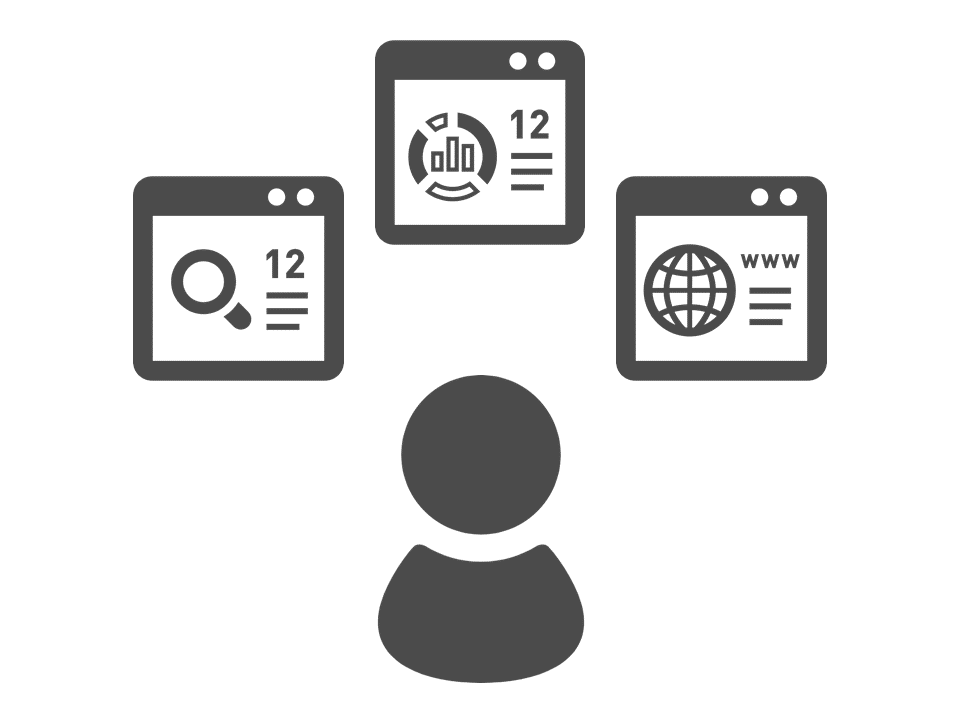

WORKS Philosophy
UPcomer WORKSの目指すもの
能動的なコミュニケーションを創り出し、
コミュニケーションによって成長する環境をつくる

“楽しむ”をベースにおいた
コミュニケーション環境をつくる

自ら考え、自ら行動することで
学びや成長を加速させる

人と人とのつながりから成長の
相乗効果をうむ環境をつくる
グループワークを通してリレーションを深める機会をつくる
Features
UPcomer WORKSの特徴
コミュニケーションをつくるグループワーク機能
オンラインでグループワークをするうえで大切な“ハード面”と“ソフト面”の二方向から 実施しやすい環境をつくったグループワーク機能です。ユーザーがオンライン上でコミュ ニケーションをスムーズに取れる環境をつくり、ストレスなくワークに没入できるようにし ています。また、そのうえで“何をさせるのか”というコンテンツ設計面も、教育研修を 強みとするフェアブレーンの視点からオリジナルのワークテーマが自由に活用できる機 能が標準装備しております。
オンライン上のグループワークで様々な交流のかたちをつくる
課題出題
ディスカッション
回答・まとめ
フィードバック
情報の共有
それぞれの考察
意見のシェア
気付きと共感
統一に向けた話し合い
1つにまとめる行動
(発表)
グループまとめ
個人の意見
フィードバックによる理解の深化
ワークテーマが6つ標準装備
各ワークテーマには、ワークストーリーと合わせてワンポイントアドバイス、オリジナルワークシート、実施 後のフィードバックまで設計されているため、自社のコミュニケーション、教育に合ったものを選択してす ぐに実施できます。また、ワークはオリジナルでつくることも可能ですので、より自社の教育に近いもので 実施できます。
課題系
＜テーマ1＞
働く会社の20年後を考える
＜テーマ2＞
働く会社を分析する
基礎力
深化系
＜テーマ3＞
社会人基礎力12の能力要素から一番大切な能力を考える
＜テーマ4＞
13番目に入る社会人基礎力を考える
交流
促進系
＜テーマ5＞
グループメンバーを他己紹介で紹介する
＜テーマ6＞
自社の採用で使うノベルティグッズを考える
目的から逆算して実施内容を考えることで自社に合ったフォローを強化することができる
オリジナルワークシートでワークの成果を見える化
ワークテーマごとにワークに合わせたオリジナルワークシートがついています。
ワークシートでグループワークを体系立てて実施して、成果をかたちにすることができます。
ワークシートでグループワークを体系立てて実施して、成果をかたちにすることができます。
ユーザーは最後の総括と合わせてワークシートを見ることでグループワークでの学びや気付きを再確認し、深化させることができます。

グループごとに提出したワークシートを全グループに共有することで、新たな気づきを見出したり、建設的な刺激を受けることができます。
コミュニケーションを見える化するリザルト機能
グループワークの目的として交流の側面と合わせて教育の側面があります。グループワークの効果を最大限高めるために、進捗状況が随時把握でき、終了後にはデータがすべてダウンロードできるようになっています。
グループワークをオンラインで実施するからこそのメリットを最大限活かして、効果を高めるリザルト機能が標準装備されています。
グループワークをオンラインで実施するからこそのメリットを最大限活かして、効果を高めるリザルト機能が標準装備されています。
グループワークの過程と結果を把握する
課題提出
グループワークの実施
終了
振り返り
グループワークを“実施する”だけで終わらせない
採用・教育は様々なフェーズ、年度が同時並行で進みます。そんな複数のフォローすべき対象者を1つのIDで一元管理することができる機能がエリアです。内定者はもちろん、新入社員、インターンシップ参加者など、状況が異なるユーザーごとにUPcomer WORKSのサイトを立ち上げ、それぞれで管理できます。
どんな採用シーンでも一元管理するエリア機能
採用・教育は様々なフェーズ、年度が同時並行で進みます。そんな複数のフォローすべき対象者を1つのIDで一元管理することができる機能がエリアです。
内定者はもちろん、新入社員、インターンシップ参加者など、状況が異なるユーザーごとにUPcomer WORKSのサイトを立ち上げ、それぞれで管理できます。
内定者はもちろん、新入社員、インターンシップ参加者など、状況が異なるユーザーごとにUPcomer WORKSのサイトを立ち上げ、それぞれで管理できます。
様々な採用フェーズのユーザーを一括フォロー

“エリア機能”により一元管理が可能
①合格者エリア(学生同士の交流は不可)

②内定者エリア(学生同士交流ができる)
③インターンシップエリア(交流可否の設定可能)